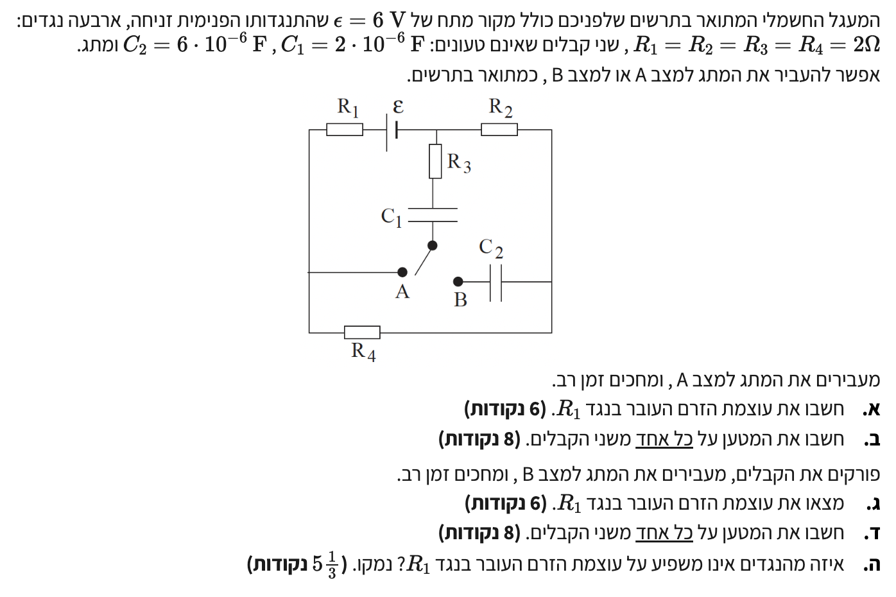

שאלה זו עוסקת במעגלים חשמליים המשולבים עם נגדים וקבלים במצב מתמיד (Steady State).
המפתח לפתרון שאלות מסוג זה הוא להבין את התנהגות הקבל במעגל החשמלי: לאחר זמן רב מחיבור המעגל ("ומחכים זמן רב"), הקבלים נטענים במלואם. קבל טעון לחלוטין מהווה נתק (מפסק פתוח) – כלומר, עוצמת הזרם בענף המכיל קבל שווה לאפס (\( I = 0 \)).
באמצעות מיומנות סרטוט מעגל שקול, ננקה מן המעגל ענפים שאינם מוליכים זרם, נחשב את הזרמים במעגל ואת המטען האגור בקבלים במצבי המתג השונים.

[תמונת השאלה המקורית]לא נמצאה תמונה בשם question-image.png באותה תיקייה.
עוצמת הזרם העובר בנגד \( R_1 \), כלומר \( I(R_1) \).
נוסחאות ועקרונות בשימוש:\( V = IR \)\( R_T = \sum R_i \)קבל טעון במצב מתמיד מהווה נתק (\( I = 0 \))
הצבה ופתרון צעד-אחר-צעד:
1. זיהוי רכיבים שאינם מוליכים זרם:
כאשר המתג במצב A ומחכים זמן רב, המעגל מגיע למצב מתמיד (Steady State). במצב זה, הקבל \( C_1 \) נטען במלואו ופועל כנתק (מפסק פתוח). עוצמת הזרם בענף המרכזי שבו נמצא הקבל שווה לאפס (\( I = 0 \)).
מכיוון שהנגד \( R_3 \) מחובר בטור לקבל \( C_1 \) בענף המרכזי הזה, הזרם העובר גם דרכו הוא \( I_{R3} = 0 \). בנוסף, הקבל \( C_2 \) אינו מחובר כלל במצב A (הדק אחד שלו נשאר באוויר בנקודה B הפתוחה), ולכן לא זורם דרכו זרם.
2. סרטוט מעגל שקול:
ענף שבו הזרם הוא אפס אינו משתתף בהעברת המטען במעגל הסגור. מותר לנו למחוק מן השרטוט את הענף המרכזי ואת הקבל המנותק. כתוצאה מכך, מתקבל מעגל שקול פשוט הכולל אך ורק את הרכיבים שדרכם זורם הזרם.
מעגל שקול במצב מתמיד (מצב A)
3. חישוב מתמטי לפי המעגל השקול:
הזרם זורם בלולאה טורית יחידה הכוללת את מקור המתח \( \varepsilon \) ושלושת הנגדים \( R_1, R_2, R_4 \) בטור.
המטען על הקבל \( C_1 \) (\( Q_1 \)) והמטען על הקבל \( C_2 \) (\( Q_2 \)).
נוסחאות ועקרונות בשימוש:\( C = \frac{Q}{V} \)\( V_{AB} = \sum \varepsilon - \sum IR \)במצב מתמיד לא זורם זרם בענף הקבל
הצבה ופתרון צעד-אחר-צעד:1. חישוב המטען על הקבל \( C_2 \):
במצב A, המתג מחובר לנקודה A. הקבל \( C_2 \) מחובר בצדו האחד לנקודה B הפתוחה. מכיוון שאין מעגל סגור המאפשר הזרמת מטענים אל הלוחות של הקבל \( C_2 \), הוא נשאר בלתי טעון:
\[ Q_2 = 0\text{ C} \]
2. חישוב המטען על הקבל \( C_1 \):
הקבל \( C_1 \) מחובר (יחד עם הנגד \( R_3 \)) במקביל לענף הימני והתחתון הכולל את הנגדים \( R_2 \) ו-\( R_4 \). מכיוון שלא זורם זרם בענף הקבל במצב מתמיד (\( I_{R3} = 0 \)), מפלת המתח על הנגד \( R_3 \) היא אפס (\( V_{R3} = 0 \)).
לפיכך, המתח על הלוחות של הקבל \( C_1 \) שווה בדיוק להפרש הפוטנציאלים בין הצומת העליון לנקודה A. נחשב מתח זה על פי המסלול העובר דרך הנגדים \( R_2 \) ו-\( R_4 \):
תשובה סופית: המטען על הקבל \( C_1 \) הוא \( Q_1 = 8 \cdot 10^{-6}\text{ C} \) (או \( 8\,\mu\text{C} \)), והמטען על הקבל \( C_2 \) הוא \( Q_2 = 0\text{ C} \).
טיפ מורה 1: כשאין זרם בנגד (\( I=0 \)), אין עליו מפלת מתח (\( V=IR=0 \)). לכן, הנגד \( R_3 \) מתנהג במצב מתמיד פשוט כ"תיל מוליך" מבחינת הפוטנציאל החשמלי, וכל המתח של הענף מופיע ישירות על לוחות הקבל!
טיפ מורה 2 - טריק זהב לשאלות קבלים: שימו לב, הטריק לחישוב מטען על קבל טעון (שלא זורם בו זרם) הוא למצוא את המתח על הקבל ומשם לחשב את המטען לפי \( C = \frac{Q}{V} \implies Q = C \cdot V \). המתח בין שתי נקודות במעגל מתקבל לרוב בקלות דרך חוק אוהם או דרך חוקי קירכהוף.
נוסחאות ועקרונות בשימוש:\( V = IR \)\( R_T = \sum R_i \)קבלים בטור במצב מתמיד מהווים נתק (\( I = 0 \))
הצבה ופתרון צעד-אחר-צעד:
1. כאשר המתג מועבר למצב B, הענף המרכזי מורכב מהנגד \( R_3 \) ומהקבלים \( C_1 \) ו-\( C_2 \) המחוברים בטור.
2. במצב מתמיד (זמן רב לאחר העברת המתג), שני הקבלים נטענים במלואם ואינם מאפשרים מעבר זרם דרך הענף שבו הם נמצאים (\( I_{branch} = 0 \)).
3. אם ננקה שוב את ענף הקבלים שלא זורם בו זרם, המעגל השקול במצב B נשאר זהה לחלוטין למעגל השקול שהיה במצב A! הזרם זורם אך ורק בלולאה החיצונית הכוללת את מקור המתח \( \varepsilon \) והנגדים \( R_1, R_2, R_4 \) בטור.
4. נחשב את הזרם דרך הנגד \( R_1 \) לפי חוק אוהם והתנגדות שקולה בטור:
המטען על כל אחד משני הקבלים: \( Q_1 \) ו-\( Q_2 \).
נוסחאות ועקרונות בשימוש:\( C = \frac{Q}{V} \)\( \frac{1}{C_T} = \sum \frac{1}{C_i} \)\( V = IR \)קבלים בטור אוגרים מטען זהה (\( Q_1 = Q_2 = Q_T \))
הצבה ופתרון צעד-אחר-צעד:1. זיהוי המתח הכולל על ענף הקבלים:
במצב B, הענף הכולל את הנגד \( R_3 \) והקבלים \( C_1 \) ו-\( C_2 \) מחובר במקביל לנגד \( R_2 \) בלבד.
מכיוון שלא זורם זרם בענף הקבלים (\( I_{R3} = 0 \)), מפלת המתח על הנגד \( R_3 \) היא אפס. לכן, המתח הכולל המופעל על שילוב הטורי של הקבלים \( C_1 \) ו-\( C_2 \) שווה בדיוק למתח על הנגד \( R_2 \):
תשובה סופית: המטען על כל אחד משני הקבלים הוא \( Q_1 = Q_2 = 3 \cdot 10^{-6}\text{ C} \) (או \( 3\,\mu\text{C} \)).
טיפ מורה: זכרו כלל ברזל בחיבור קבלים בטור: המטען על כל הקבלים בטור הוא זהה! המתח הכללי מתחלק ביניהם ביחס הפוך לקיבול שלהם (\( V_1 = 1.5\text{ V} \), \( V_2 = 0.5\text{ V} \)).
סעיף ה' - הנגד שאינו משפיע על עוצמת הזרם
מה נתון:
ניתוח המעגל במצב מתמיד מסעיפים א'-ד'.
מה מחפשים:
זיהוי הנגד שאינו משפיע על עוצמת הזרם בנגד \( R_1 \) והסבר פיזיקלי.
נוסחאות ועקרונות בשימוש:קבל במצב מתמיד מהווה נתק (\( I = 0 \))\( V = IR \)
הצבה ופתרון:
הנגד שאינו משפיע על עוצמת הזרם העובר בנגד \( R_1 \) הוא הנגד \( R_3 \).
נימוק פיזיקלי:
הנגד \( R_3 \) מחובר בטור לקבל \( C_1 \). במצב מתמיד (לאחר שהקבלים נטענים במלואם), קבל מהווה נתק. לכן, עוצמת הזרם בענף המרכזי שבו נמצא הנגד \( R_3 \) שווה לאפס (\( I_{R3} = 0 \)).
מכיוון שלא זורם זרם דרך הנגד \( R_3 \), גודל התנגדותו אינו משפיע על ההתנגדות הכוללת של המעגל, אינו גורם למפלת מתח (\( V_{R3} = 0 \)), ולא משנה את פיזור הזרמים במעגל. גם אם נגדיל, נקטין או נחליף את הנגד \( R_3 \), הזרם בנגד \( R_1 \) יישאר ללא שינוי.
תשובה סופית: הנגד \( R_3 \) אינו משפיע על עוצמת הזרם העובר בנגד \( R_1 \).
טיפ מורה: נגד שנמצא בענף עם קבל משפיע רק על קצב הטעינה/הפריקה ברגעים הראשונים בלבד, אך אין לו שום השפעה על מצב שווי המשקל הסופי (המצב המתמיד)!
נוסח השאלה המקורית
[תמונת השאלה המקורית]לא נמצאה תמונה בשם question-image.png.